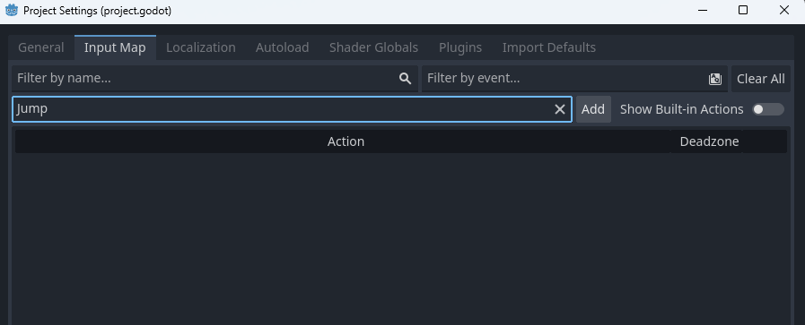
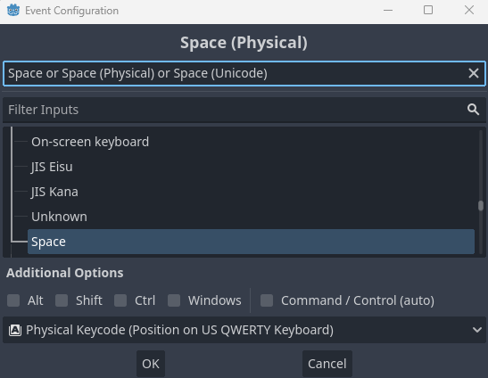
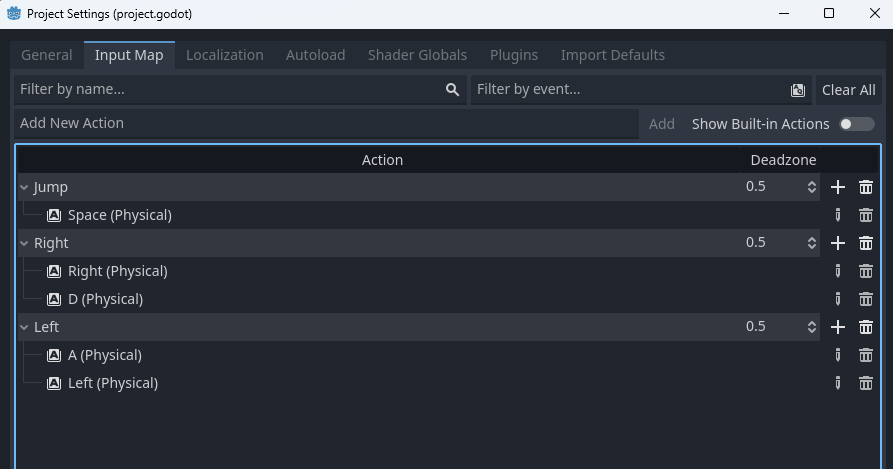

On this page we will setup our player's input and prep our main physics loop!
Right now we have a script for our player, and while we can definitely create a bunch of functions we have no way to get Input from our player. Inputs are the buttons and keys that the player presses. In order to set them up we need to go to our project settings. At the top of the project settings menu navigate to the Input Map tab. Once there you will see a field named Add New Action. We will type our action name (this one will be called Jump) and press Add.
A new action will appear in the box below. Press the plus sign next to it add a new button. A menu will pop up, and you can either filter the inputs to find what you want or you can simply press the key or button you want and Godot will automatically select it (I will be selecting the space key).
If you want more than one button or key for an input you can simply press the plus button again and choose another.
We will also need actions for right and left, go ahead and repeat the same steps you did for jump, then your input maps should look something like this:
Once you are happy with your inputs you can close the project settings and go back to the player script.
The physics process function is very important. Godot automatically calls the physics process function of every node each physics frame (roughly once every 1/60th of a second). Put simply, the physics process is a loop that we connect all of our functionality to (at least until we begin to work with signals). The first step in making our physics process function (or any other function) is understanding what it's parts are.
func _physics_process(delta):
passThe func keyword tells Godot that this line of code is start of a function
This is the name of the function. You may notice a blue arrow-like symbol to the left of the viewport on the _physis_process's line. This is indicating that this function is being inherited.
After each function there is a set of parantheses with a list of Arguments. These arguments are values passed by the method call and can be used in the function. Delta is being passed from the main engine and is the number of seconds since the last physics process frame occured (important so our physics aren't changed based on computer speed).
Beneath the function's name and arguments is it's body, or all the code that will be ran when the function is called. The pass keyword is a stand in that tells Godot to skip this function.
While we could put all of our player's physics directly inside of the _physics_process function, it would quickly get cramped and confusing. In order to prevent this we can call other functions inside of functions! You can think of this like nesting folders. Let's add some function calls into our _physics_process and see what happens:
func _physics_process(delta):
apply_gravity(delta)
handle_jump()
apply_acceleration(input_axis,delta)
apply_friction(input_axis,delta)
update_animations(input_axis)
move_and_slide()I'm sure you may of noticed a whole lot of errors occuring. That's due to two reasons. One, while the variable delta is being passed to some of our functions, we have no variable called input_axis! To fix that we can create a new variable inside of the _physics_process. A variable inside of a function is called a Local Variable. Local variables cannot be used outside of the function they are in and are automatically reset each time the function is called. Let's call our new variable input_axis, then let's set it to Input.get_axis("Left","Right"). Our function should then look like this:
func _physics_process(delta):
var input_axis = Input.get_axis("Left","Right")
apply_gravity(delta)
handle_jump()
apply_acceleration(input_axis,delta)
apply_friction(input_axis,delta)
update_animations(input_axis)
move_and_slide()The Input.get_axis("Left","Right") portion of the variable is actually a function call from the Input class!
Of course, we still have the errors. That is because of reason #2: we didn't actually make the functions we are trying to call! In the next section we will finally finish our player by creating all the functions we added to our _physics_process.